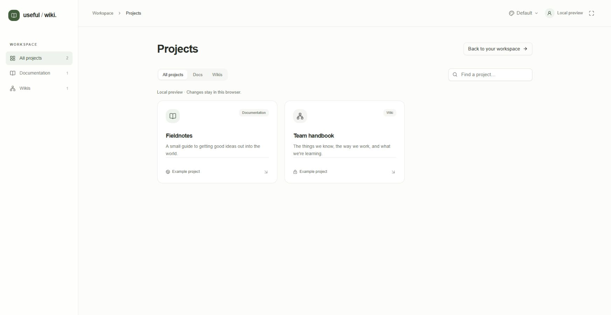
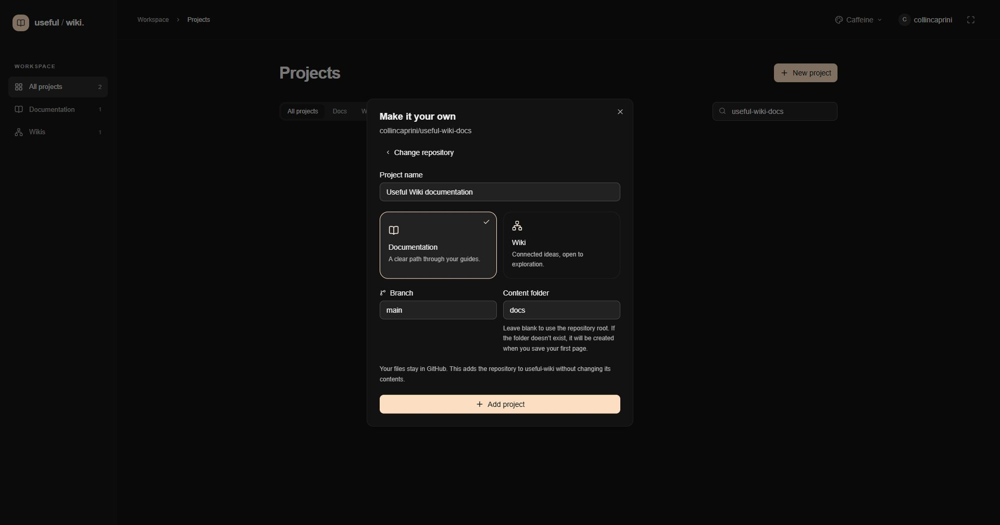

Run commands in the useful-wiki application checkout. This useful-wiki-docs repository contains documentation, not the application.
Install Node.js 24 and npm. From the application checkout, run:
npm install
npm run dev
Open http://localhost:3001/demo. No credentials are needed. Example edits and uploads stay in browser storage; they never write to GitHub or PocketBase. The dashboard at http://localhost:3001 also identifies its example projects. Use this preview to work on navigation and editing before configuring real services.

After starting the app, open /demo to reach this example-project dashboard. Save preview stores edits in the browser; Save to repository creates a Git commit once you work in a connected project.
Create your own GitHub OAuth App in GitHub Developer settings. Use http://localhost:3001 as its homepage and http://localhost:3001/api/auth/github/callback as its callback.
Create .env.local in the application root using the variable names in .env.example. Supply your own values:
Variable | What to set |
|---|---|
|
|
| A random value of at least 32 characters, generated locally. Encrypts and signs login and OAuth cookies. |
| Your GitHub OAuth App's client ID. |
| Your GitHub OAuth App's client secret. |
| Your own PocketBase address. Replace the example file's preconfigured URL; for the local setup below use |
| Your PocketBase superuser email, paired with the password below. |
| Your PocketBase superuser password. |
| Optional alternative to the PocketBase email/password pair. This is a PocketBase service credential, never a GitHub token. |
Generate SESSION_SECRET with:
node -e "console.log(require('crypto').randomBytes(32).toString('hex'))"
Keep credentials server-only, outside Git, without a NEXT_PUBLIC_ prefix. Keep the session secret stable across restarts; replacing it invalidates existing sessions. GitHub OAuth is configured in Next.js, not in PocketBase.
Download PocketBase into a separate local directory, run ./pocketbase serve (.\pocketbase.exe serve on Windows), and follow its installer link to create your superuser. The default address is http://127.0.0.1:8090; use that for POCKETBASE_URL.
In the app checkout, create the ignored file .local/pocketbase-test.json with your local values:
{
"url": "http://127.0.0.1:8090",
"email": "your-local-superuser@example.com",
"password": "replace-with-your-local-password"
}
Inspect the schema plan, then create missing collections and verify them:
npm run db:setup -- --local-config=.local/pocketbase-test.json
npm run db:setup -- --local-config=.local/pocketbase-test.json --apply --verify
The first command is read-only. It reports compatible existing collections and missing collections. The second creates only missing collections, verifies fields, indexes, relations, and locked rules, then checks metadata operations using temporary records. Confirm that it reports successful verification and removal of those records. Incompatible existing schemas stop setup for review.
This local option requires 127.0.0.1. Without it, the script targets a maintainer-specific allowlist and is not a general hosted installer. The application itself reads your POCKETBASE_URL from its environment; the JSON file is only for the setup and local integration scripts.
For a fresh hosted instance you own, place the app's pb_migrations/1791504000_useful_wiki.js in that instance's pb_migrations directory and restart PocketBase. Unapplied migrations run at startup; see PocketBase migrations. PocketHost users can upload the file using SFTP.
Choose one initialization method: API setup does not record this filename in migration history, so do not subsequently apply the same initial migration to that database. Keep later schema changes in separate migrations. Configure the app with your hosted instance's URL and its own service credentials.
Restart Next.js after changing environment variables.
Sign in with GitHub. The app requests read:user and repo; selecting a project does not narrow GitHub's broad repo scope. Your organization may require approval or SSO authorization.
Choose New project, select a repository you can write, and choose its branch, content folder, and Documentation or Wiki experience.
Open a page. To test publishing, use a repository you control: saving creates a real Git commit on the selected branch.

After configuring your services and signing in, New project opens the repository setup flow. This real form shows the documentation repository's intended settings before Add project was submitted.
Production requires a Node.js host. Build and start the app with:
npm run build
npm start
The start script listens on port 3001. Serve it through your deployed HTTPS origin and set that origin as APP_URL and the OAuth homepage; append /api/auth/github/callback for the callback. Production session cookies require HTTPS. Use a separate OAuth App for development, server environment variables for deployment credentials, and the same session secret across instances of one deployment.
OAuth callback errors: check the exact scheme, hostname, port, and callback path in your OAuth App and APP_URL, then restart Next.js.
PocketBase connection or schema errors: confirm your own instance is running, credentials belong to it, and both application collections were initialized. Do not loosen their API rules to resolve an authentication failure.
“Unexpected target” from setup: use the local configuration command above for 127.0.0.1, or the migration method for your hosted instance.
Save rejected: check your GitHub write access and branch protection. A revision conflict requires reconciling the preserved draft with the current file.
Continue with architecture and contributing, or return to the docs home.